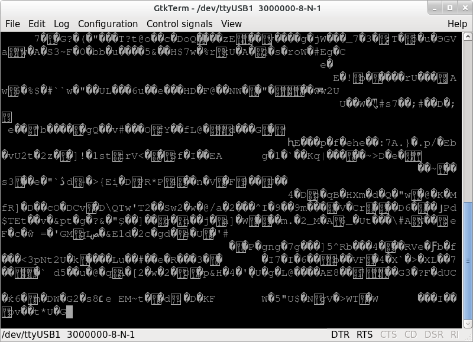
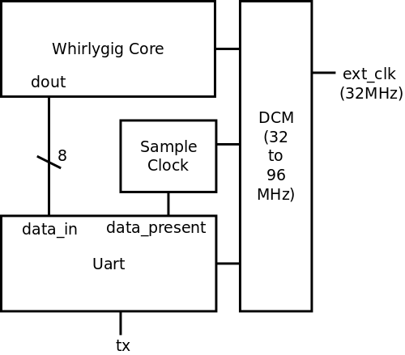
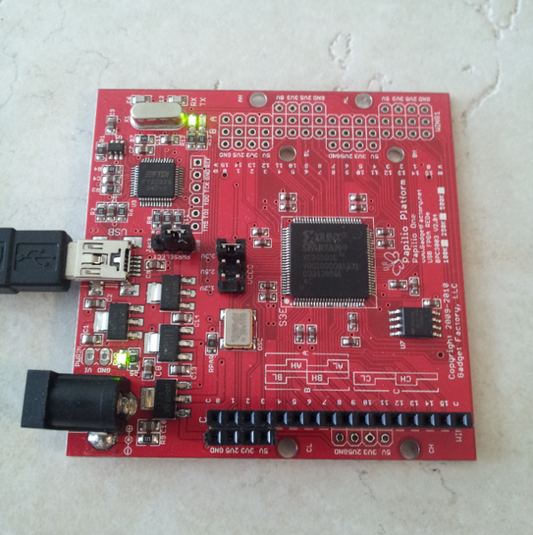

Hardware RNG for Papilio One based on the original Whirlygig
A hardware random number generator (RNG) for the Papilio One board based on the Whirlygig.

The Whirlyfly project generates random bytes and sends them over the Papilio's built-in serial port. To generate the bits, the Whirilygig module is used. Whirlygig uses a series of unlocked inverter chains to generate truly random bits. These bits are then sent over the Papilio's serial port to a host computer. The bits can then be used in a number of different applications.
This code for this project comes from a variety of sources. The code added by me is under the GPL. The following lists the code that is used, based on, or referenced by the project.
The uart side of this project is largly based on Jack Gasset's uart tutorials for the Papilio One. I would recommend starting there if you are unfamiliar with the process: HighSpeedUart Tutorial.
You will need to follow the steps mentioned in Jack's tutorial and add the following Xilinx uart code files to the to the project:
After getting all the code in place, generate the bitstream as in the uart tutorial.
Once the bitstream is generated, load it on the Papilio in the usual
fashion (linux): papilio-loader -f whirlyfly.bit
You could use a program like minicom or
GtkTerm to open the port and read
data, but it isn't going to be pretty. What we really want is to set
the default serial port settings so we can read the data with standard
tools (head, dd, cat, etc.) If we don't set the default, the
system default will be used (115200 usually). If the baud rates
aren't matched, out random data won't be as random as it should be.
It will appear to work correctly in this case, but if you test the
data it won't be quite right (the FIPS tests do really poorly).
To set the default settings for a serial port in Linux, use the
stty command. It works
like so:
stty --file=/dev/ttyUSB1 speed 3000000
Once everything is setup, start collecting those bits!
dd bs=1K count=1000 if=/dev/ttyUSB1 of=random_bits.bin
This will create a file called random_bits.bin that contains 1
megabyte of random bytes.
od -t x1 random_bits.bin | head
Will display something like:
0000000 ed 6a 5a 81 b7 13 6b 8c 4b c7 b4 ad 1d 84 13 4b
0000020 88 a7 f9 7a 20 79 e1 df 98 80 42 dc 6a 05 6b 4e
0000040 a5 95 94 00 8d 6e ce 06 84 6b ef a0 4b 9c a0 d4
0000060 de 84 64 e5 23 59 59 6c 3d 3b 59 73 cf 42 8f e8
0000100 01 38 43 45 a4 e2 0b 3a cf f7 4c 8b 01 61 ec 24
0000120 cf 8f cf 11 24 39 2e 50 1b ad 60 7a 05 ce 6a eb
0000140 cb 24 28 95 25 7a ad 73 c5 89 b7 33 b4 99 79 41
0000160 f7 90 bc 8c f5 5a f5 8f 11 50 ad 1c 96 43 19 54
0000200 85 c2 30 ae ae 8f f4 34 22 bc 01 1a 74 30 02 99
0000220 12 ee 1b d4 8e 8d 04 b7 4a 70 a4 19 ae a7 33 65
If you have Dieharder installed, you can test to see how random the file is (though you really do need more bytes the 1M):
dieharder -a -f random_bits.bin
Or just run Dieharder against the Papilio stream directly:
dieharder -a -f /dev/ttyUSB1
The
rng-tools package
for Linux provides the ability to feed the entropy pool from a
non-standard source. With Whirlyfly generating the bits and
rng-tools feeding the entropy pool, applications that use the
standard Linux interfaces can take advantage of high quality
randomness without changing a line of code.
To see if things are working, you can run rngd in the foreground like so:
rngd -f -r /dev/ttyUSB1
A few of the fips tests might fail (especially at first) but things should settle out and start working quickly.
The original Whirlygig ran on a Xilinx CPLD and output its data in parallel using 8 I/O pins. Those pins were then periodically read by a USB enabled microcontroller which then sent them to the host computer. This project adapts the Whirlygig code to run on a Papilio One board. For the Papilio, it was easiest to just use the on-board USB to serial adapter. The Uart core is provided by Xilinx, and runs default at 3M baud.

The original Whirlygig core had to be modified slightly in order to
compile with the latest Xilinx ISE (tested with 14.1). In addition to
the KEEP attribute applied to the inverters, the SAVE attribute
had to be applied as well. I'm not sure if this is because of the
newer IDE or because of a different target device.
For more information on the Whirlygig core, see the Whilygig site.
The code has been tested on a Papilio One 500K outputting samples at 3M baud. The output was ran against the Dieharder test suite. The Papilio passed all tests, just as the original Whirlygig.
Running an entropy calculator on one 5MB sample yielded 7.988 bits of entropy.
